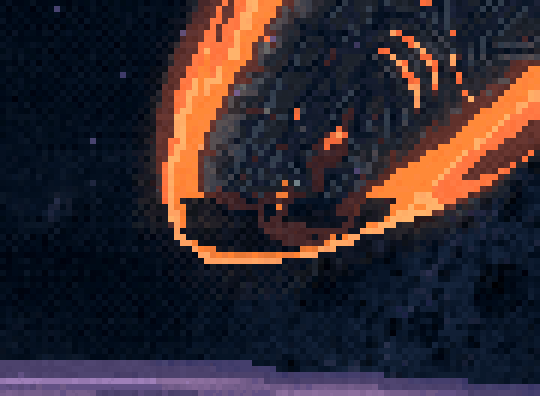
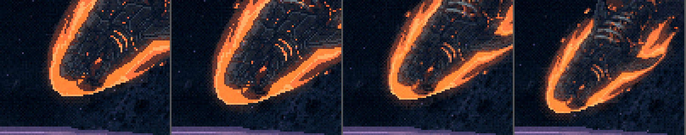
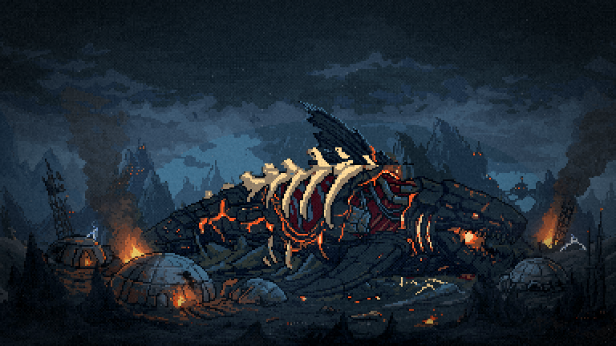
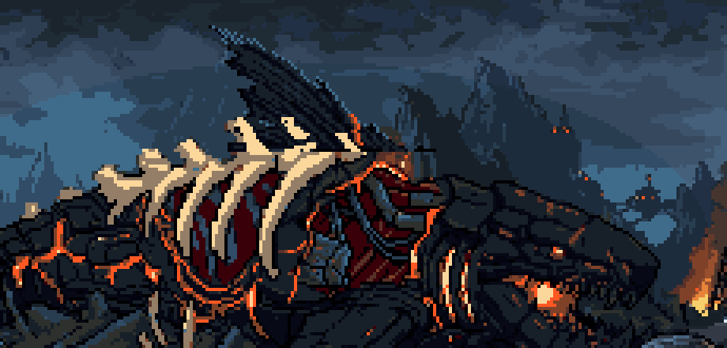

Leviatã novo · rodada 3
Bloco D · 18/10/2026. ← rodada 2 · rodada 4 → · A nave menor na ferida: aprovada (NAVE_ESCALA = 0.5). O menu: a gerada 91·0 + luz.
Capítulo 5 · a mancha na ponta da boca corrigida, no jogo
Era um buraco transparente. O recorte de 24/09 só aceita pixel quente abaixo de y=151, onde começa a lua do conceito. Na edição 83 o focinho desce mais, e o miolo branco da brasa (255,255,254) e as placas escuras abaixo dessa linha ficavam de fora, deixando o céu aparecer pelo buraco. A lua desta fonte vai só até a luminância 125, então agora entram também o branco (acima de 170) e o casco escuro até y=156. As 12 escalas foram refeitas, e o GIF também.



Capítulos 6 e 7 · a dorsal no lugar certo
o erro da rodada 2 Eu pus a região da barbatana em x 240–288, em cima da cabeça: as guelras (os arcos laranja) ficam em x≈260 e marcam onde a cabeça começa. E a barbatana era gerada, sem relação com o desenho dele. Por isso ficou "grudada".
A anatomia da 82, lida ampliada: focinho em x≈330, olho em (292, 147), guelras em x 258–268, o dorso aberto com as costelas em x 150–245, o rabo em x≈100. Na base, a dorsal fica a 50–65% do comprimento a partir do rabo, ou seja, aqui em x≈190–245: atrás da caixa de costelas.
Agora a barbatana é a dorsal da própria base, a identidade dele, e não uma gerada. Recortei, pus na escala da carcaça e inclinei para trás (torta). A base dela fica escondida atrás das costelas (os ossos continuam na frente), e a paleta é a da carcaça. Para não parecer colada, recebeu a luz do lugar: a borda azul-aço no bordo de ataque, como no resto do casco, e uma veia de lava subindo da base. Na versão "rasgada" há uma mordida rasa no bordo de trás. (A primeira mordida era funda e partia a barbatana em dois cacos; descartei.)


Ferramenta: scripts/_leviata/_carcaca-dorsal-base.mjs. Depois da escolha, roda a instalação de 24/09 (o frio do capítulo 7 e a folha da lava que apaga).
Menu · o nado da 91·0 + luz
O tubarão nada varrendo o rabo em crescente de lado: de perfil isso é escorço (o rabo estreita e alarga) e uma onda que corre pelo corpo, nunca rotação. São duas tomadas, cada uma em dois tamanhos: ampliada ×3, e no tamanho do menu (×0,6 com o tint do menu, ampliado ×3 para ver). A luz da lua é reaplicada em cada quadro.
| tomada | o desenho muda por quadro | fim → início | o centro anda |
|---|---|---|---|
| onda | 8–13% | 20%, emenda em ciclo | não |
| PixMiniMax 92 | 13–31% | 5% | 6 px e volta |
| PixMiniMax 91 | 24–38% | 48%, salto | 5 px e não volta |
A onda a minha aposta
A própria arte deformada: uma onda vertical que cresce para o rabo, e o rabo comprimido de lado conforme a batida. A identidade é exata e o loop fecha por construção. O movimento é mais contido.


PixMiniMax 92
O movimento é mais solto (o corpo enverga de verdade), mas o gerador redesenha as placas e as veias a cada quadro, e elas fervem. O bicho anda e volta. Fecha quase sozinho.


descartada A PixMiniMax 91 anda para a frente e não volta (salto de 48% no loop) e ferve mais.
depois da escolha Vira a folha do menu (troca o leviathan-swim-sheet, com a escala acertada para os ~70 px de hoje) e gravo o GIF no menu de verdade. A silhueta da F2 e da F3 sai do mesmo desenho.